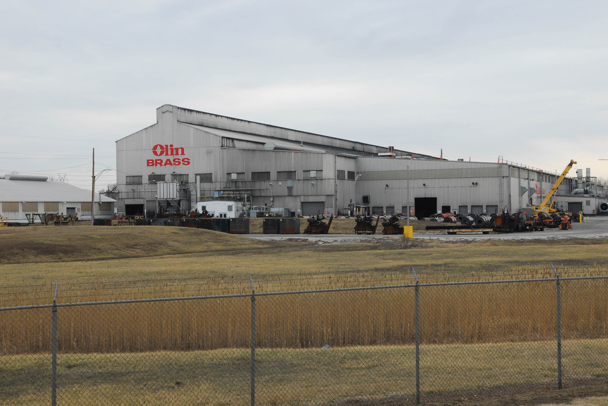

Olin Brass is an integrated brass mill producing finished strip products, but this humble brass plant plays an outsized role in the history of American gun and ammunition production.
Begun in 1892 as a manufacturer of explosives for the soft coal mines and limestone quarries of southeastern Illinois, Equitable Powder Company expanded into the production of cartridges in 1898. In a bid to consolidate production of ammunition, and to stave off a primer-cap siege from rival gun manufacturers Winchester and Remington, Olin and his sons diversified their powder company through the purchase of paper, lead shot, and fiber wad facilities. Along with its brass stamping facility, the Western Cartridge Company incorporated in 1898 and was to become, over the next half decade, one of the most profitable ammunition suppliers in the country. In the lead up to World War I, Western Cartridge built its own brass production mill and produced the most brass shell casings used by the Allies during the war.
In 1931, in the sort of corporate karmic reversal common at the time, Western was able to purchase the New Haven, Connecticut-based Winchester Repeating Arms Company after their failed attempt at post-war diversification. With the purchase of Winchester, Western could boast of being a completely integrated arms manufacturer. During World War II, Western, newly reorganized as Olin Industries (replete with its various subsidiaries such as US Cartridge Company), was to become the single largest producer of small arms in the country. Through the East Alton plant, in conjunction with company contributions from the St. Louis Ordinance Plant and government-managed facilities elsewhere, Olin employed over 62,000 people and produced over 15 billion rounds of ammunition during the war. Nearly one in every three bullets fired by American forces had the Olin stamp on it. But during this time Olin Corporation also ran afoul of the Fair Employment Practice Committee (FEPC), a Roosevelt administration initiative to integrate the defense industry and government workplaces. In 1945, the FEPC held a public hearing in East Alton's town hall to address integration of their plant—where, out of workforce of 12,000, there were zero African Americans employed. At the town hall, the Brass Mill Union Local stormed the meeting and threatened to run the FEPC out of town.
Despite the company's long foray into chemicals, paper, and plastic wrap, the production of brass and copper-alloy sheet, strip, tube, and other fabricated products continues to be the primary work of the East Alton plant. It has produced much of the metal used in nearly all American coins minted since 1965, and in 1999 the US Mint announced its selection of a proprietary coinage cladding metal developed by Olin in East Alton. The new coins are those ”Golden Dollars” that have become ubiquitous since 2000. From the Sacagawea Dollar to the more recent Presidential Dollar coins, the new coating is not only a new shiny gold color, but can also be accepted by older machinery that was designed to accept the Susan B. Anthony Dollar coin.